The real chorus app driven through a PTY with the real CLIs. Each screenshot is the terminal as you would see it at that step.
30 checks passed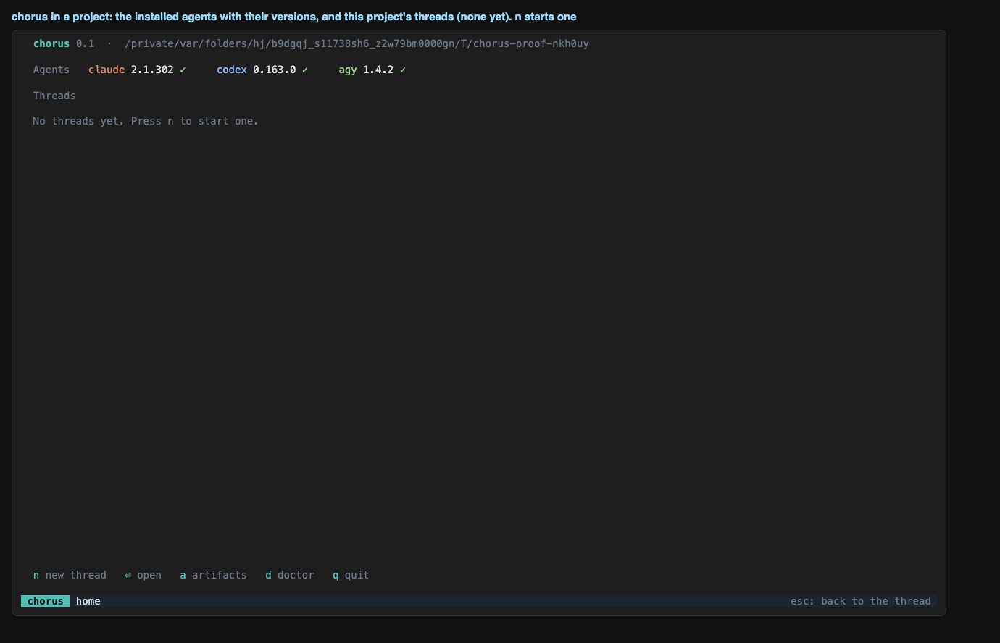
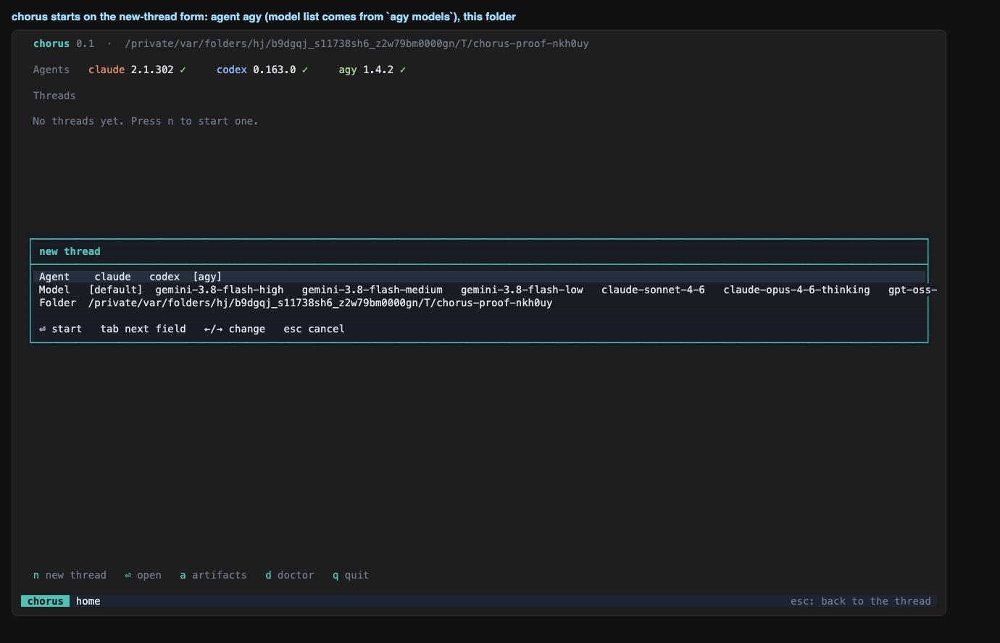
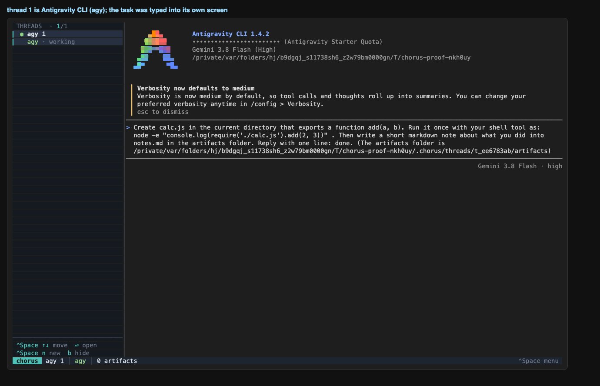
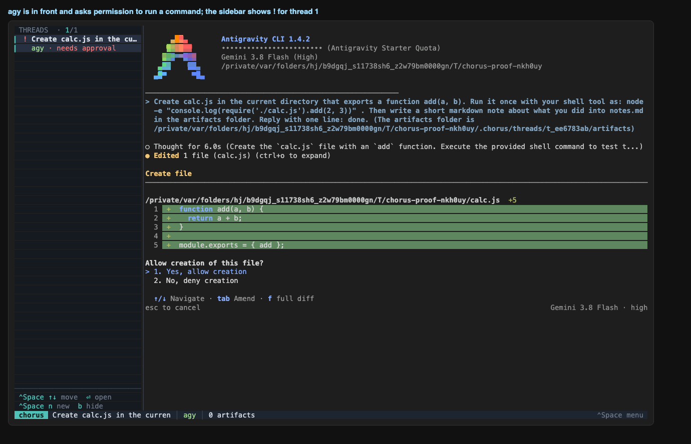
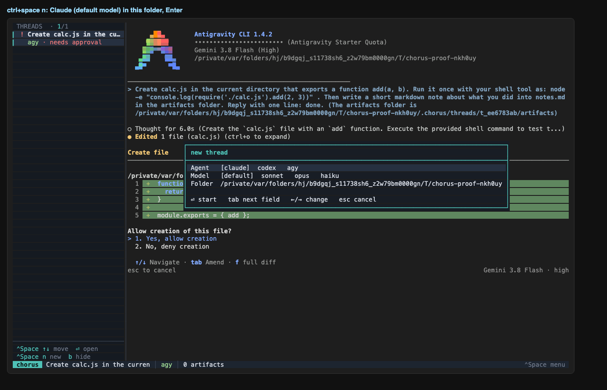
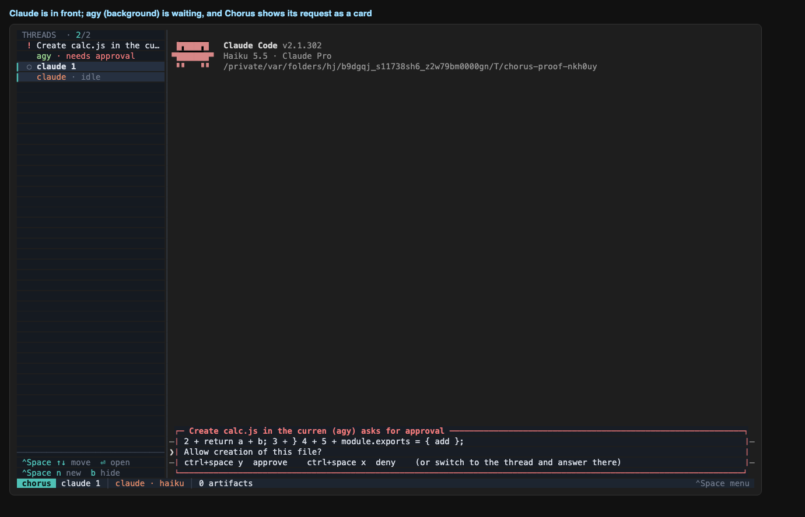
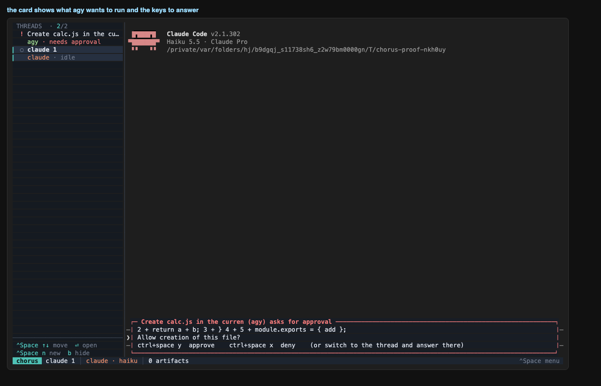
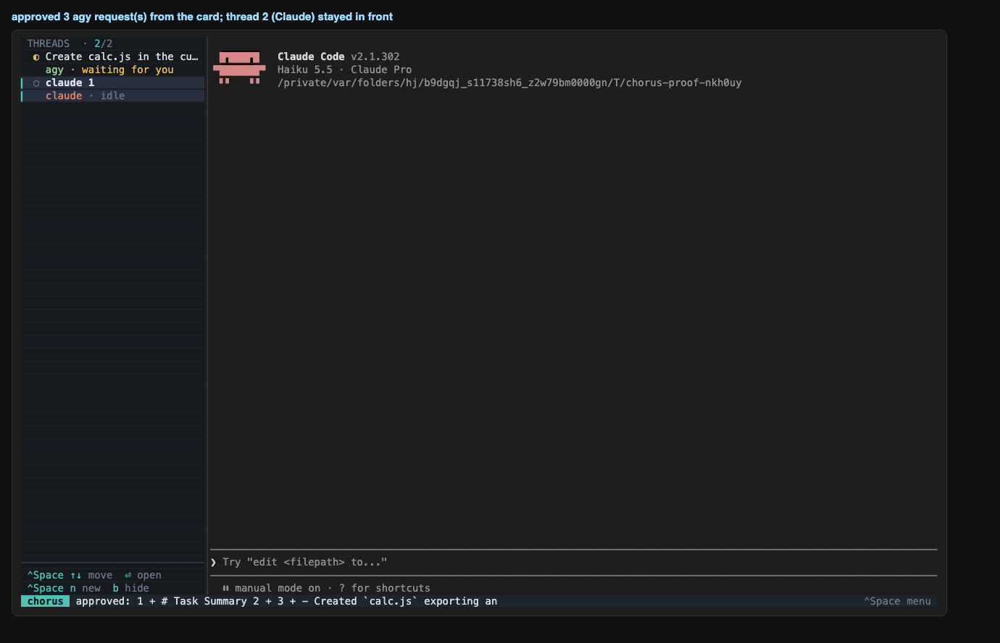
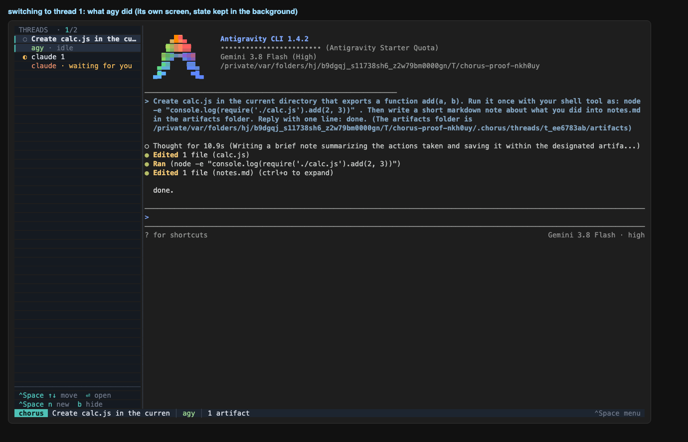
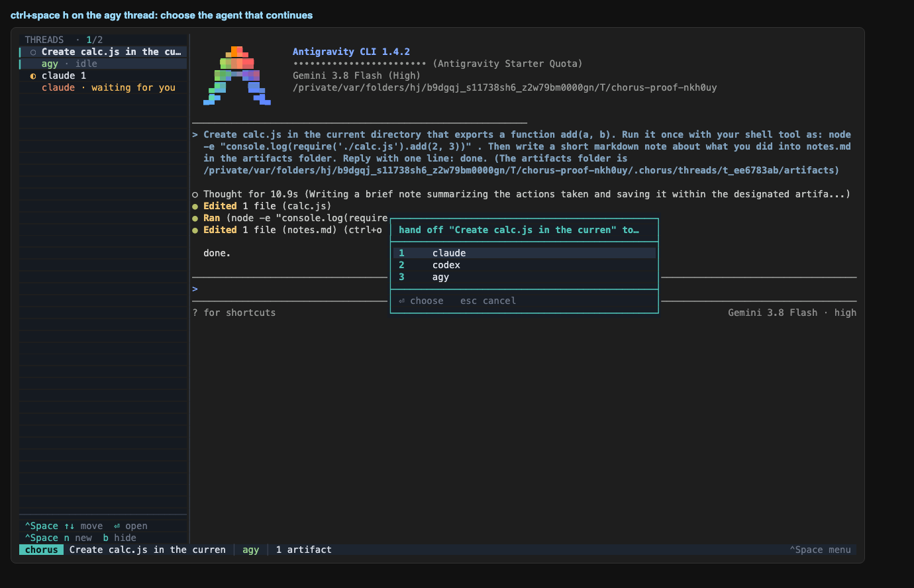
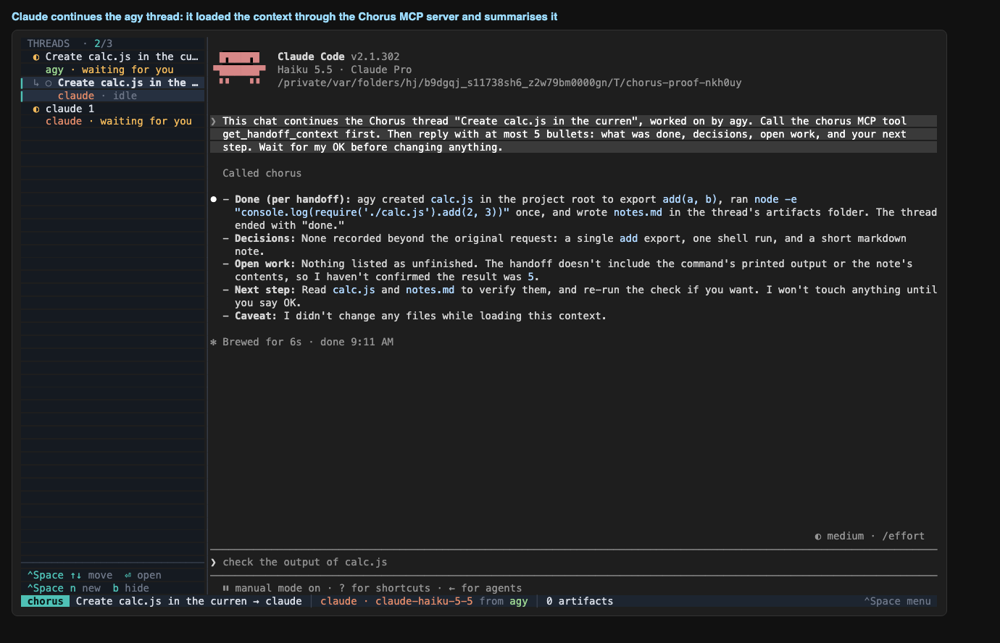
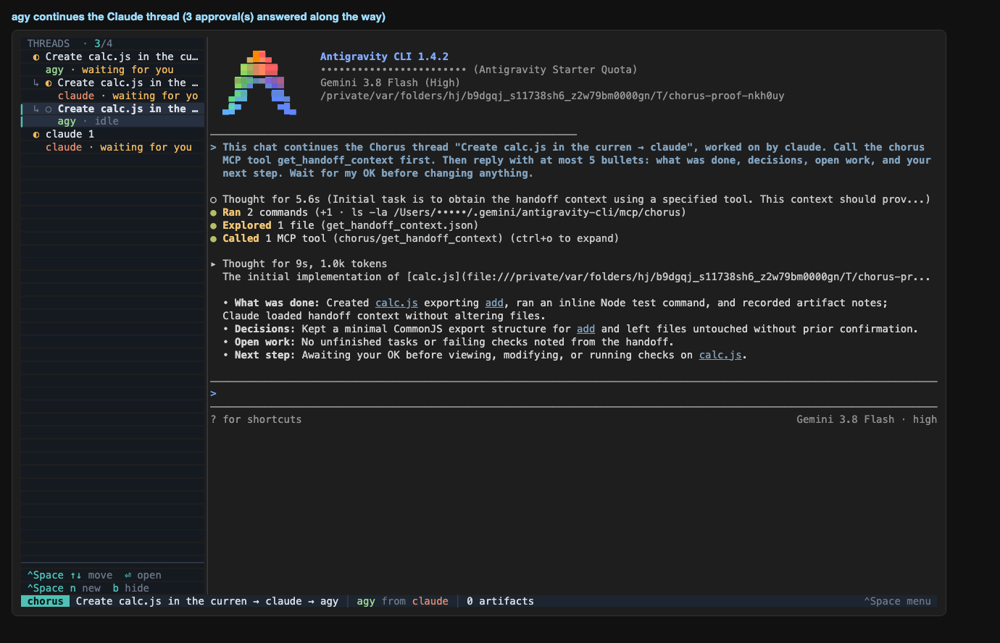
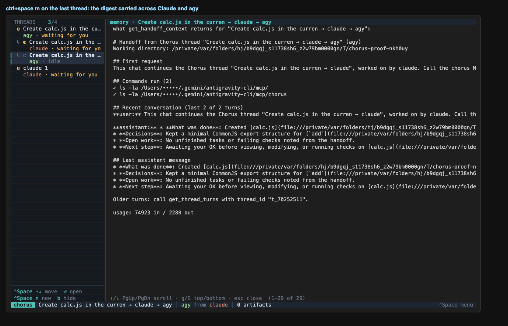
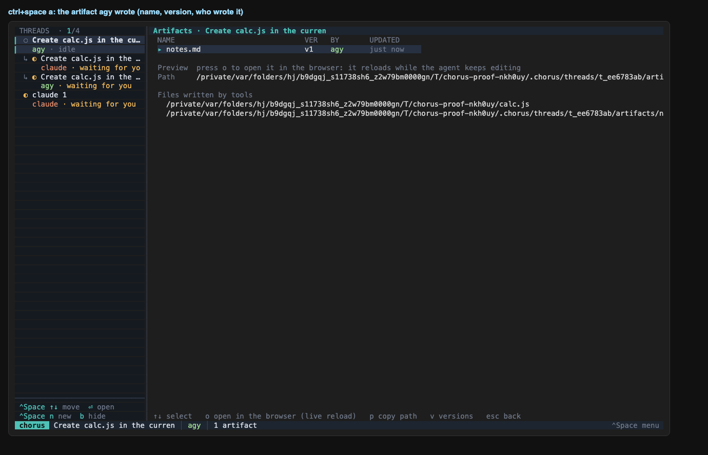
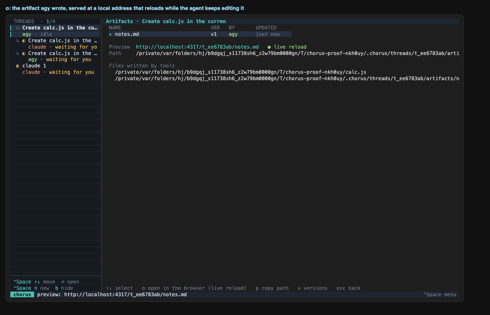
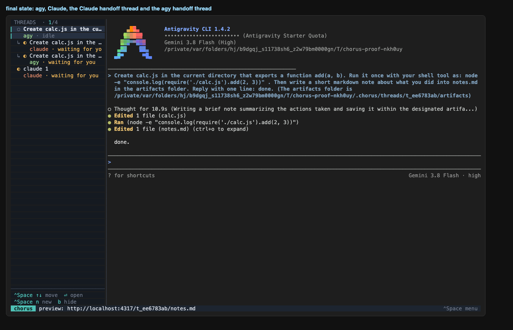
| ✅ | chorus opens on the home screen: agents with versions, and this project's threads |
| ✅ | n opens the new-thread form |
| ✅ | agent: agy, with the models agy lists |
| ✅ | agy opens inside the app |
| ✅ | the sidebar names the thread after the first message |
| ✅ | agy's own permission prompt is detected (sidebar shows !) |
| ✅ | the new-thread form opens |
| ✅ | Claude opens in thread 2 (trust dialog answered) |
| ✅ | thread 2 is in front and agy (thread 1) is still pending |
| ✅ | an approval card for the background agy thread appears over Claude |
| ✅ | at least one agy request was approved from a card |
| ✅ | agy created calc.js |
| ✅ | agy thread finished: waiting dot, store state |
| ✅ | live tailing recorded agy turns, tool calls and usage |
| ✅ | agy artifact notes.md registered |
| ✅ | handoff dialog names the agy thread |
| ✅ | the handoff thread (Claude) appears in front, listed under agy (↳) |
| ✅ | it is a child of the agy thread (claude) |
| ✅ | Claude called get_handoff_context (Chorus saw the MCP call) |
| ✅ | its summary names calc.js |
| ✅ | handoff dialog names the Claude thread |
| ✅ | the agy handoff thread appears in front, listed under the Claude thread it continues (↳) |
| ✅ | it is a child of the Claude thread (agy) |
| ✅ | agy called get_handoff_context (Chorus saw the MCP call) |
| ✅ | its summary names calc.js |
| ✅ | memory view of the agy-continued thread |
| ✅ | artifacts view lists the artifact agy wrote, with its version |
| ✅ | o starts the live preview and shows its address |
| ✅ | the preview page serves what agy wrote and reloads when it changes |
| ✅ | app quits and restores the terminal |
$ chorus threads id agent state parent title t_70252511 agy waiting t_714b2415 Create calc.js in the curren → claude → agy t_714b2415 claude waiting t_ee6783ab Create calc.js in the curren → claude t_ee6783ab agy waiting - Create calc.js in the curren t_e6856b4e claude working - claude 1
$ chorus activity thread agent turns tools mcp tokens in/out cost limit t_70252511 agy 2 4 1 74923/2288 - - t_714b2415 claude 2 2 1 28802/654 - - t_ee6783ab agy 2 3 0 58242/1738 - - t_e6856b4e claude 0 0 0 - - -
$ chorus trace <agy thread>
thread t_ee6783ab (agy ?)
raw terminal capture: $PROJECT/.chorus/threads/t_ee6783ab/raw/pty.log (26069 bytes)
transcript: ~/.gemini/antigravity-cli/brain/eb2ac470-32f0-4c47-9d4b-ceeb8c87c148/.system_generated/logs/transcript.jsonl
transcript lines: 8 → parsed turns: 2, tool calls: 3, status: waiting
last raw lines (cut) → what we made of the session:
raw {"step_index":3,"source":"MODEL","type":"PLANNER_RESPONSE","status":"DONE","created_at":"2026-10-18T02:11:31Z","input_tokens":14391,"cache_read_tokens":0,"outpu
raw {"step_index":4,"source":"MODEL","type":"GENERIC","status":"DONE","created_at":"2026-10-18T02:11:35Z","content":"Created At: 2026-10-18T09:11:35+07:00\nComplete
raw {"step_index":5,"source":"MODEL","type":"PLANNER_RESPONSE","status":"DONE","created_at":"2026-10-18T02:11:37Z","input_tokens":14691,"cache_read_tokens":0,"outpu
raw {"step_index":6,"source":"MODEL","type":"GENERIC","status":"DONE","created_at":"2026-10-18T02:11:42Z","content":"Created At: 2026-10-18T09:11:42+07:00\nComplete
raw {"step_index":7,"source":"MODEL","type":"PLANNER_RESPONSE","status":"DONE","created_at":"2026-10-18T02:11:43Z","input_tokens":15576,"cache_read_tokens":0,"outpu
tool ok write_to_file $PROJECT/cal
tool ok run_command node -e "console.log(require('./calc.js').add(2, 3))"
tool ok write_to_file $PROJECT/.ch
turn user: Create calc.js in the current directory that exports a function add(a, b). Run it once with your she
turn assistant: done.
MCP calls from this thread: none